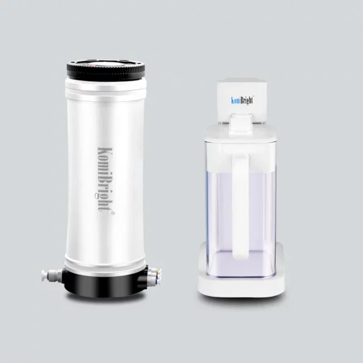
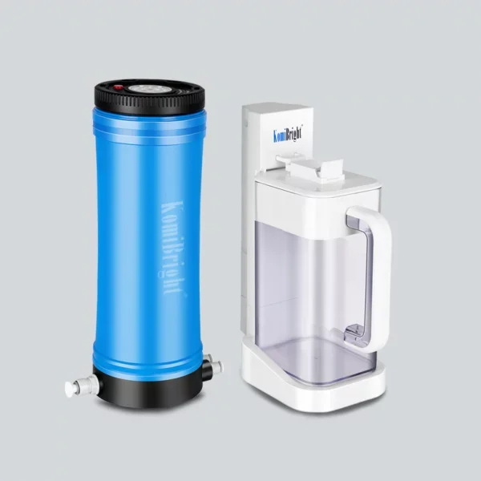
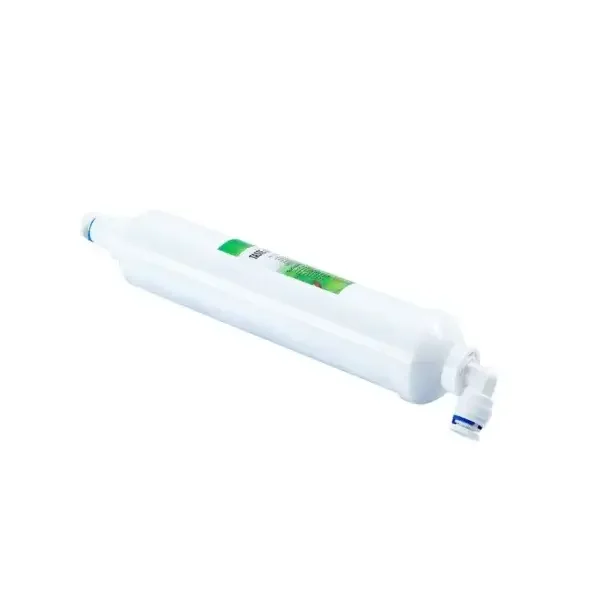
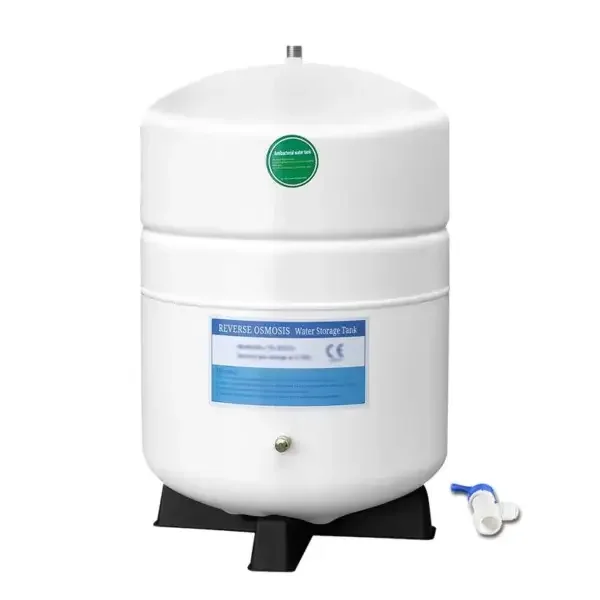
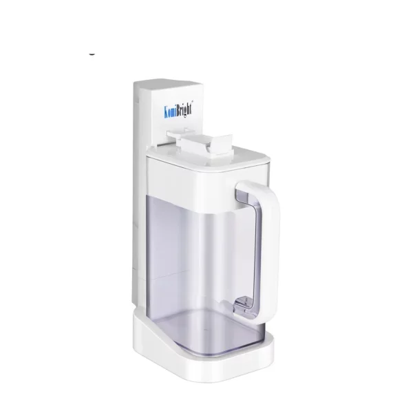
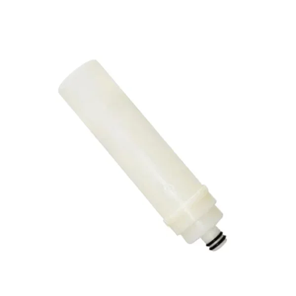

产品目录


全部产品
五大系列共13款产品——每一款都围绕免泵免电过滤与一年一换滤芯设计。
RO反渗透净水器
这是我们的核心产品线：只靠自来水压力工作的反渗透净水器——不用泵、不插电、零噪音。一支复合滤芯加一支RO膜，一年只需更换一次。


无桶大流量RO
大流量、小体积。直饮机型完全省去储水桶，1000G大通量RO膜即滤即饮，新鲜看得见。
户外净水器
把RO级好水带到任何地方。为露营地、房车和电网到不了的地方而生——同样的0.0001μm过滤精度，随身携带。
不锈钢超滤系统
面向全屋和商用场景的工业级过滤：304不锈钢外壳，可清洗PVDF膜，流量从1000到20000升/小时可选。
滤芯与配件
系统所需的全部耗材——设计得足够简单，任何人一年换一次，不需要工具，也不需要师傅上门。



